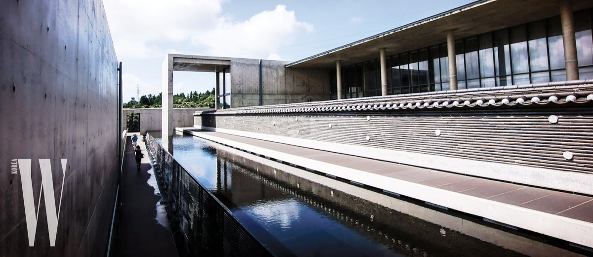

본태박물관은 1995년 건축계의 노벨상인 프리츠커 상을 수상한 세계적인 건축가 안도타다오의 설계로 지어진 박물관입니다. 노출콘크리트의 인공적인 요소에 자연적인 요소인 빛과
물을 끌어들여 건축과
주변과의 조화를 고려하는 '건축환경'이라는 안도 타다오의 건축철학이 담겨 있습니다. '제주도 대지에 순응하는 전통과 현대'를 컨셉으로 설계를 진행하였으며, 박물관을 두 개의 공간으로 나누어
제1박물관에는 전통공예품이 전시되어 있으며, 제2박물관에는 현대미술작품이 전시되어 있습니다. 제3박물관에는 쿠사마 야요이의 조형물 2점이 상설 전시중이며, 제 4박물관은 거의 완벽하게 보존된 조선후기의
상여와 꼭두, 제 5박물관은 <삶의 정서가 깃든 불교미술의 매력>이란 주제로 소장품 기획전을 전시 중 입니다. 본태박물관은 경사진 대지의 성격을 거스르지 않고 공간적인 조화를 이루기 위해 서로 다른
높이에서 만나는 삼각과 긴 사각형의 마당을 가진 두개의 공간으로 구성되었습니다. 두 L자형 볼륨은 동질감을 가지면서도 단의 차를 두고 만나 다양한 공간감과 느낌을 연출합니다. 제1박물관에는
소박하고 인간적인 공간으로 전통공예품이 전시되어 있으며, 제2박물관에는 높이감이 강조된 공간으로 현대미술과 다양한 문화 행사를 수용할 수 있도록 기획되었습니다. 제3박물관은 쿠사마 야요이,
제4박물관은 상여와 꼭두, 제5박물관은 불교유물을 전시하고 있습니다.
981420579_1488289351_kmoIcCrj.gif
본태박물관 제1박물관
전통문화에 담긴 본래의 아름다움을 발견하여 이를 현대와 다시 소통하고자 하는 시도로서 전시를 기획.
전통 수공예품은 소박함과 단정함을 지니고 있지만 때로는 예상치 못한 파격과 탁월함을 보여준다. '소박함과 화려함', '단정함과 파격'을 동시에 보여줌으로써 우리 수공예품에 담긴 다채로운
아름다움을 소개 하였다.
전시작품: 소반, 보자기, 목가구, 전통공예품 등 1000여점
본태박물관 제2박물관
비디오 아티스트 백남준의 해프닝과 비디오아트를 연결하는 상직적인 작품 ‘TV Cello’ 및 ‘I never read Wittgensten’ 등을 전시하였으며, 20세기 현대 조각의 새로운 장을
연 안소니 카로(Anthony Caro)의 ‘Wave’, 대담한 색상과 컷 아웃기법으로 대상에 대한 새로운 시각을 제공하는 팝아트 조각가 데이비드 걸스타인(David Gerstein)의
‘Burning Lips’, 이브 클라인(Yves Klein, 1928~1962)의 고유 색채인 ‘International Klein Blue'를 담고 있는 ‘Blue YKB’, 피카소,
마티스와 더불어 가장 비중있는 모더니즘 화가인 페르낭 레제(Fernand Leger, 1881~1955)의 노동 연작 ‘Les Constructeurs’, 살바도르 달리(Salvador
Dali, 1904~1989)의 ‘La Montre Molle’등을 전시함.
전시작품 : 'TV Cello' 외 50여점